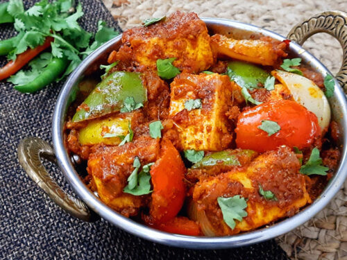

Kadai Paneer

Ingredients
- Spices
- Kashmiri red chilli - 2
- Black peppercorns - 1 teaspoon
- Coriander seeds - 1 tablespoon
- Cumin seeds/Jeera - 1 teaspoon
- Fennel seeds - 1 teaspoon
- Ghee - 3 tablespoon
- Red chilli - 1
- Coriander Seeds ½ teaspoon
- Cumin seeds - ½ teaspoon
- Garlic cloves - 5, sliced
- Green chilli - 2, sliced
- Ginger - 1 inch, Juliennes
- Tomatoes - 3, medium-sized, chopped
- Onions - 1, medium-sized, diced
- Bell pepper - 1 medium size, diced
- Paneer - 250 Gm, cubes
- Garam masala - 1 teaspoon
- Red chilli powder - 1 teaspoon
- Kasuri Methi or Dried fenugreek leaves - 1 teaspoon
- Fresh coriander leaves - 1 tablespoon, chopped finely
- Salt - 2 teaspoon (change according to your taste)
Procedure
- Set a pan on medium heat, add the whole roasted spices and dry roast for 2 minutes. This will give you a good fragrance.
- When it cools down, add to a grinding jar and grind it coarsely.
- Set the same pan on medium heat, add ghee, whole red chillies, coriander seeds, cumin seeds and sauté them for a minute and wait till it gets roasted to a brown colour.
- Add the tomatoes and half of salt; cook them until they are mushy.
- Add the Kadai masala, garam masala powder and red chilli powder, cook until the oil separates which is around 6 minutes.
- Add bell pepper and onion, mix well for 20 seconds.
- Add rest of salt and add paneer cubes. Gently mix without breaking paneer cubes. Cook for another 3 minutes. Check for seasoning and salt now.
- Add Kasuri methi and chopped coriander leaves, mix well and the Dhaba style Kadai paneer is ready.
Hot Kadai Paneer is ready to serve